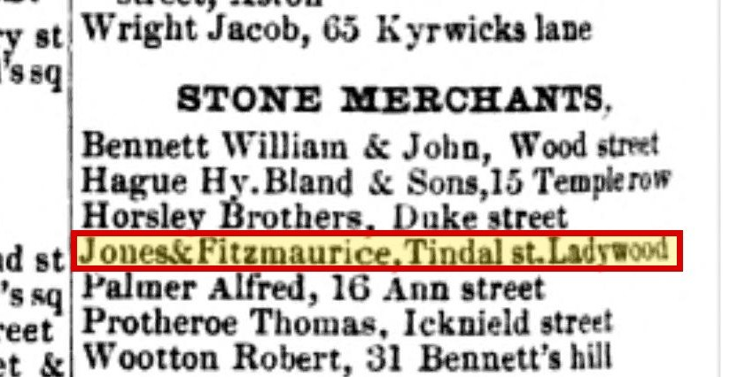
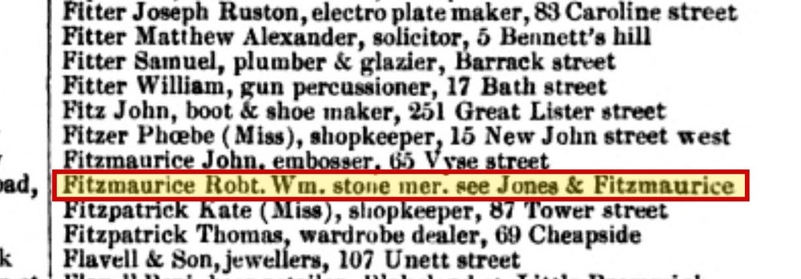
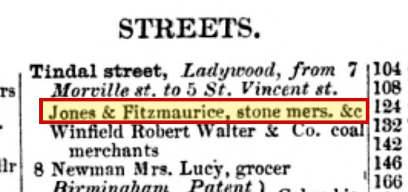
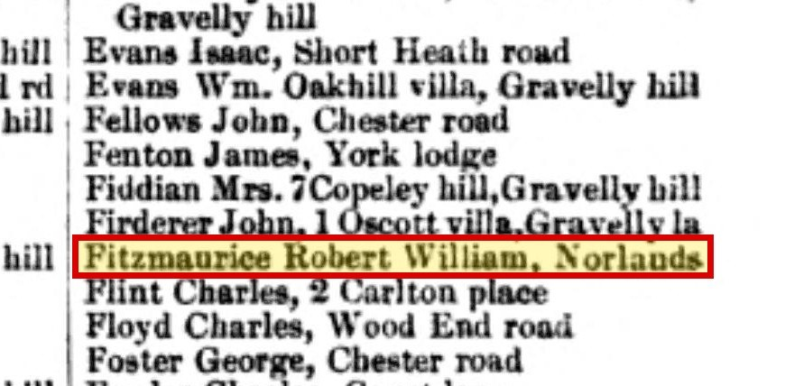
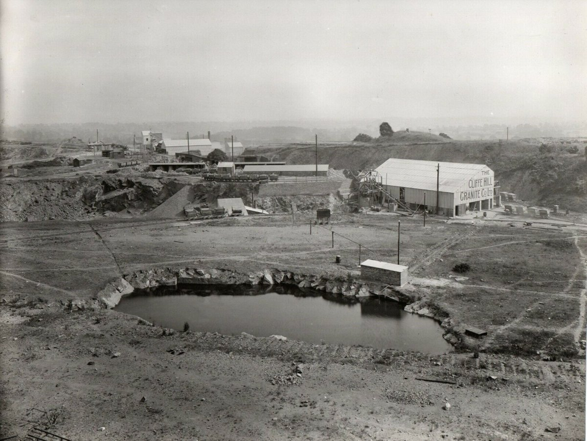

Pat's great-grandfather Robert William FitzMaurice was a Birmingham stone merchant in the firm of Jones and Fitzmaurice. The histories of the Cliffe Hill granite quarry, near Markfield in Leicestershire, say that Jones and Fitzmaurice of Birmingham first worked it in the 1870s, and that his son John Rupert, Pat's great-uncle, took it over in 1891 and built it into the Cliffe Hill Granite Company. The quarry is still working today.
How sure we are. FACT means a record or two independent sources say it. PROBABLE means one good source, or several that fit. The 1879 directory entries were read from the page images. The quarry's own history comes from published accounts: the company time line kept by MQP, the firm that runs the quarry now, and a 2007 article by Annette McGrath in the Mercian Geologist, which draws on a 1974 history of the quarry railway. Those accounts name "Mr Jones and Mr Fitzmaurice of Birmingham" and "J. R. Fitzmaurice", not Robert William or John Rupert in full, so the family link is probable rather than proved. Name, trade, town, dates and John Rupert's death in 1949 all agree. How the evidence is graded.




Robert William FitzMaurice was a surveyor when he married Fanny Mary Falcke in 1861, and a surveyor and contractor at Little Bromwich, Aston, in 1871. Kelly's Birmingham directory of 1879 lists the firm of Jones and Fitzmaurice, stone merchants, in Tindal Street, Ladywood, and "Robt. Wm." Fitzmaurice as a stone merchant of that firm. The same directory has a Robert William Fitzmaurice living at a house called Norlands, in Erdington. In the 1881 census he was a granite merchant and contractor at Aston Manor. PROBABLE These are almost certainly the same man: the name, the trade and the town all agree. Jones, his partner, has not been identified.
Charnwood Forest, north west of Leicester, is one of the few places in England where very old, very hard rock comes to the surface. It was cut for road stone, kerbs and setts, the small granite blocks used to pave Victorian streets. Annette McGrath writes that Jones and Fitzmaurice, two businessmen from Birmingham, formed a partnership in the late 1870s to work the stone at Cliffe Hill for the small scale making of setts and kerbs, and that the quarry closed after a few years. The MQP time line gives the 1870s for the start and 1881 for the year Jones and Fitzmaurice stopped working Cliffe Hill. PROBABLE One web history (MineArchive) gives 1868 for the first quarrying; it cites no record for that year, so it is not used here.
On 9 May 1891 J. Rupert Fitzmaurice acquired the quarry from his father. He needed a manager, and wrote to Peter Preston, who was then working at the quarry in Enderby. The story goes that the two men held the interview sitting on small heaps of stone at the quarry. Preston took the post at 3 pounds a week, brought a millwright and a blacksmith with him from Enderby, and put in a crusher, then a second. A licence to store and use explosives was granted on 15 July 1891, and the first load of stone was sold to a local farmer at 2 shillings and 6 pence a ton. MQP gives the output in 1891 as 10,000 tonnes a year. PROBABLE (McGrath, citing Billington, 1974; MQP time line.)
That "father" was almost certainly Robert William. John Rupert's birth was registered at King's Norton in 1865 with the mother's maiden name Falcke, he is the "Rupert J." in Robert William's 1871 household, and when Robert William died at Edgbaston in 1895, John Rupert, described as a quarry owner, was one of his executors.

Original photographs of the company's lorries are for sale from a Berlin dealer on Delcampe. The pictures belong to the seller, so they are linked here, not copied. The lettering on the lorries, read from the listing photographs, says CLIFFE HILL GRANITE CO LTD and MARKFIELD LEICESTER. FACT that these are the company's lorries; PROBABLE that it is the family firm. No family member is named or shown. Nothing has been bought.
The business still exists, under other owners. Tarmac bought the Cliffe Hill Granite Company in 1965. The old quarry closed in 1989, after 98 years, when a new pit, New Cliffe Hill, opened next to it. In 1997 Cliffe Hill became part of Midland Quarry Products (MQP), a joint company of Tarmac and Hanson, and Hanson took full ownership in 2013. A 714 metre tunnel joining the old and new quarries was finished in 2003, and stone has been taken from the old quarry again since the mid 2000s. MQP calls Cliffe Hill its largest quarry and asphalt works. It produces up to 4.5 million tonnes of the local granite, called Markfieldite, every year, about 40 per cent of it sent out by rail. PROBABLE (MQP site page and time line; Leicestershire and Rutland Historic Environment Record MLE21759.)
The old quarry lies on the edge of Markfield and Stanton under Bardon, about 8 miles north west of Leicester. It is on the family map, with the firm's 1879 address in Tindal Street, Birmingham.